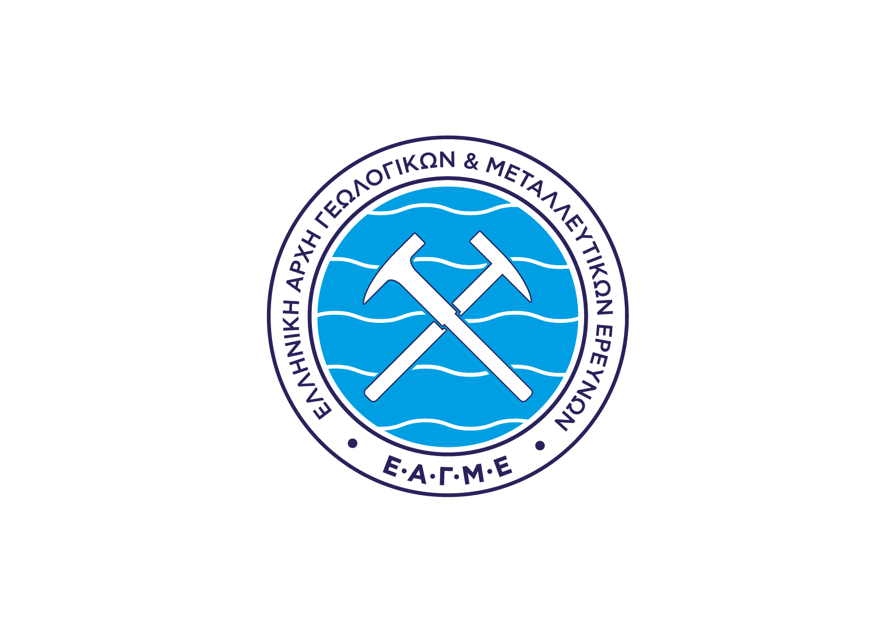

|  |
Όροι χρήσης της Γεωπύλης και των δικτυακών υπηρεσιών που παρέχονται μέσω αυτής - Αποποίηση ευθύνηςΗ Ελληνική Αρχή Γεωλογικών και Μεταλλευτικών Ερευνών (Ε.Α.Γ.Μ.Ε.) αποποιείται ρητά κάθε ευθύνης αστικής ή ποινικής και για οποιαδήποτε ζημιά του χρήστη ή τρίτου, που ήθελε προκύψει από οποιαδήποτε ενέργεια βασισμένη στο περιεχόμενο της γεωπύλης. Oι πληροφορίες που παρέχονται στην ιστοσελίδα αυτή είναι συμβουλευτικού και μόνο χαρακτήρα και καταβάλλεται κάθε δυνατή προσπάθεια ώστε να διατηρούνται ακριβείς και επίκαιρες. Επιπλέον διευκρινίζεται ότι οι πληροφορίες αυτές δεν αποσκοπούν στο να υποκαταστήσουν νομικά κείμενα και ούτε αποτελούν νομική ερμηνεία. Οι διασυνδέσεις με εξωτερικές σελίδες προσφέρονται αποκλειστικά και μόνο για διευκόλυνση των επισκεπτών και δεν θα πρέπει να εκληφθούν με οποιονδήποτε τρόπο ως υιοθέτηση, σύσταση ή έγκριση τους. Η Ε.Α.Γ.Μ.Ε. είναι κάτοχος και επιφυλάσσεται των πνευματικών δικαιωμάτων της παρούσας Γεωπύλης, των διαδικτυακών υπηρεσιών και του περιεχομένου που δημοσιοποιείται μέσω αυτής και διατηρεί μονομερώς το δικαίωμα να τροποποιεί τις διαδικτυακές υπηρεσίες της γεωπύλης, τα σύνολα γεωχωρικών δεδομένων καθώς και τους όρους χρήσης αυτών οποτεδήποτε κρίνει τούτο αναγκαίο, χωρίς προηγούμενη ειδοποίηση. Η χρήση των συνόλων γεωχωρικών δεδομένων της παρούσας Γεωπύλης διέπεται από τους όρους της Άδειας Creative Commons Αναφορά Δημιουργού - Όχι Παράγωγα Έργα 4.0 (CC-BY-ND 4.0) (https://creativecommons.org/licenses/by-nd/4.0/legalcode.el). Ειδικότερα, αυτή η άδεια επιτρέπει την αναδιανομή, με εμπορική και μη εμπορική χρήση, με την προϋπόθεση να γίνεται αναφορά στον δημιουργό (Ε.Α.Γ.Μ.Ε.) και το έργο του να παραμείνει αμετάβλητο στο σύνολό του. ( Οι άδειες ‘Creative Commons’ είναι τύπος αδειών διαχείρισης των πνευματικών δικαιωμάτων έργων και δεδομένων που υλοποιούνται – διατίθενται ψηφιακά, μέσω του διαδικτύου ) |
||